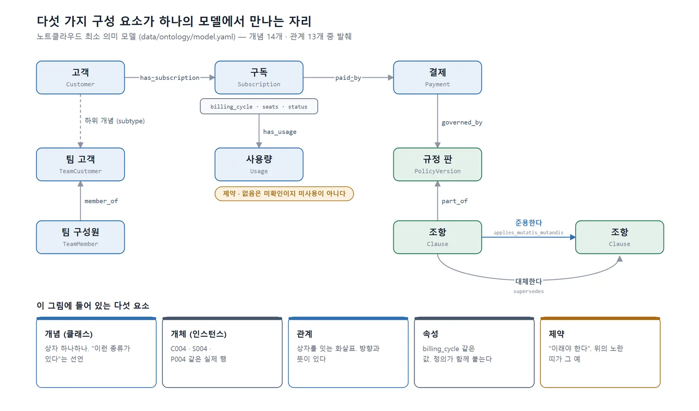

[참고] 개념·설계 설명 — 예제는 ontology-tutorial 저장소의 노트클라우드 데이터 기준
회사마다 다른 "고객"의 뜻
영업팀에게 "고객"은 견적을 받아 간 회사입니다. 회계팀에게 "고객"은 세금계산서를 발행한 거래처입니다. 고객지원팀에게 "고객"은 지금 채팅창 너머에서 화를 내고 있는 사람입니다. 세 팀이 "이번 달 고객 수"를 보고하면 숫자가 셋 다 다르고, 셋 다 틀린 것은 아닙니다. 각자 다른 것을 "고객"이라고 부르고 있을 뿐입니다.
이 문제를 해결하는 가장 오래된 방법은 회의를 열어 합의하고, 합의한 내용을 사전에 적어 두는 것입니다. "고객이란 우리와 구독 계약을 맺은 주체다. 개인일 수도 팀일 수도 있다. 팀 고객에는 구성원이 속하며, 구성원은 고객이 아니다." 이렇게 적어 두면 다음부터는 "팀원 K1은 고객인가?"라는 질문에 사전을 펼쳐 답할 수 있습니다.
온톨로지(ontology)는 이 사전을 사람뿐 아니라 프로그램도 읽을 수 있는 형태로 적어 둔 것입니다. 원래는 철학에서 "존재하는 것들의 체계"를 뜻하는 말이었지만, 정보 과학에서는 1990년대 초 톰 그루버(Tom Gruber)가 내린 "개념화의 명시적 명세(explicit specification of a conceptualization)"라는 정의가 널리 쓰입니다. 뒤에 "공유된(shared)"과 "형식적(formal)"이라는 수식어가 붙어 지금의 통용 정의가 됐습니다. 말이 어렵지만 풀면 이렇습니다.
- 개념화: 우리 업무에 어떤 것들이 있고 서로 어떤 관계인지에 대한 머릿속 그림
- 명시적: 머릿속에 두지 않고 밖으로 꺼내 적음
- 형식적: 프로그램이 해석할 수 있는 규칙적인 형태
- 공유된: 한 사람의 생각이 아니라 관련자들이 합의한 것
01-2에서 오류를 검색·데이터·의미·규칙 네 가지로 나눴습니다. 온톨로지가 직접 겨냥하는 것은 그중 "의미" 문제입니다. 노트클라우드에서 고객이 "구독 취소하고 싶어요"라고 말할 때 그것이 해지인지 환불인지 결제 취소인지, 학생 요금제 환불에 어느 조항이 적용되는지 같은 문제입니다.
구성 요소를 노트클라우드 모델로 보기
이 책의 예제 저장소에는 4장에서 만들 최소 의미 모델이 미리 들어 있습니다. 파일 경로는 data/ontology/model.yaml 이고, 개념 14개와 관계 13개로 이루어져 있습니다. 온톨로지의 구성 요소 다섯 가지를 이 파일의 실제 항목으로 살펴보겠습니다.
개념(클래스)
개념(concept) 또는 클래스(class)는 "이런 종류의 것이 있다"는 선언입니다. 모델의 한 항목을 그대로 옮기면 다음과 같습니다.
- id: Subscription
label: 구독
definition: 고객이 특정 요금제를 특정 결제 주기로 이용하는 계약. 결제 완료 시점에 성립한다.
attributes: [billing_cycle, seats, status, promo_code, current_period_start, current_period_end]
states: [active, cancel_scheduled, ended]
핵심은 definition 줄입니다. "결제 완료 시점에 성립한다"는 문장은 이용약관 2조 1항에서 가져온 것으로, 뒤에서 "계약 당시 규정"을 정할 때 기준일이 왜 결제 완료일인지를 설명해 줍니다. 개념은 계층을 이룰 수 있습니다. CustomerRequest(고객 요청) 아래에 RefundRequest(환불 요청), CancellationRequest(해지 요청), PaymentReversalRequest(결제 취소 요청), SeatChangeRequest(좌석 변경 요청) 네 하위 개념이 있습니다. 이 계층 하나가 01-3의 질문 Q03("해지하면 돈이 돌아오나요?")과 Q04("어제 결제했는데 취소하고 싶어요")의 답을 가릅니다. 셋은 고객 입장에서 모두 "취소"지만 개념으로는 서로 다른 것이고, 적용 규정도 다릅니다.
개체(인스턴스)
개체(individual) 또는 인스턴스(instance)는 개념에 속하는 실제 하나하나입니다. 고객 C004, 구독 S004, 2025-06-20의 결제 P004 같은 것입니다. 개념 정의는 model.yaml에 있고 개체는 data/structured/ 폴더의 CSV, 나중에는 PostgreSQL 테이블의 행으로 존재합니다. 개체 집합을 따로 지식 그래프라고 부르기도 하며, 이 구분은 02-4에서 다룹니다.
관계
관계(relation)는 개념과 개념을 잇는 선입니다. 방향과 카디널리티(cardinality, 몇 대 몇인지)가 있습니다.
- id: applies_mutatis_mutandis
label: 준용한다
from: Clause
to: Clause
note: 제2판 6조 1항(학생) → 3조·4조(베이직 규정)
이 관계는 환불 규정 제2판 6조 1항의 "학생 요금제의 환불은 베이직 요금제의 규정을 준용합니다"라는 한 문장을 기계가 따라갈 수 있는 형태로 옮긴 것입니다. 질문 Q09("학생 요금제를 연간으로 결제했는데 환불 기준은?")에 답하려면 6조에서 출발해 4조로 건너가야 하는데, 문서 검색만으로는 6조와 4조가 별개의 조각으로 잡힙니다. 관계가 있어야 두 조각이 연결됩니다. 같은 이유로 supersedes(대체한다), cites(인용한다), governed_by(적용 규정 판) 같은 관계가 모델에 있습니다.
속성
속성(attribute 또는 property)은 개념이 가지는 값입니다. Payment(결제)의 paid_at, amount, promo_code, is_renewal 같은 것입니다. DB 컬럼과 거의 같아 보이지만 차이가 하나 있습니다. 온톨로지에서는 속성에도 정의가 붙습니다. 용어 사전(data/ontology/glossary.yaml)에서 paid_at은 "결제가 완료된 날. 계약 성립일이자 환불 기간·적용 규정 판의 기준일"로 정의되고, 문서마다 "결제 완료일", "계약 성립일", "결제일", "갱신 결제일"로 달리 불린다는 사실까지 적혀 있습니다.
제약
제약(constraint)은 "이래야 한다" 또는 "이럴 수 없다"는 조건입니다. 모델에서 requested_by 관계의 note("팀 고객의 요청은 관리자 역할만 유효")나 has_usage 관계의 note("없으면 미확인이지 미사용이 아니다")가 제약에 해당합니다. 후자는 질문 Q19(사용량 기록이 없는 고객 C007의 환불)를 판단 보류로 이끄는 근거이며, 02-2에서 열린 세계 가정을 설명할 때 다시 봅니다. 형식 온톨로지 언어에서는 제약을 추론에 쓰지만, 이 책에서는 상당 부분을 5장의 규칙 파일(rules.yaml)과 6장의 DB 제약으로 나누어 구현합니다.
다섯 요소를 한 그림으로 놓으면 다음과 같습니다.

"공유된 정의"가 핵심인 이유
구성 요소만 보면 온톨로지는 ER 다이어그램에 설명을 조금 더 붙인 것처럼 보입니다. 실제로 그렇게 오해하는 경우가 많고, 02-2에서 그 차이를 따로 다룹니다. 여기서는 정의의 수식어 중 "공유된"에 집중하겠습니다.
노트클라우드의 문서 여섯 종은 각각 다른 사람이 다른 독자를 위해 썼습니다. 환불 규정은 법무 관점에서, FAQ는 고객이 읽기 쉽게, 운영 매뉴얼은 상담원이 실수하지 않게 쓰였습니다. 그래서 같은 것이 다르게 불립니다.
| 표준 용어 | 환불 규정 | FAQ | 고객 발화 |
|---|---|---|---|
| CancellationRequest(해지) | 해지 | 구독 취소 | 취소해 주세요 |
| Unused(미사용) | 미사용(2판에서 정의) / 사용하지 않은 경우(1판, 정의 없음) | 서비스를 이용하지 않았다면 | 한 번도 쓰지 않았는데 |
| Outage(서비스 장애) | 장애 | 서비스가 안 됐던 시간 | 안 됐던 시간(점검 포함 가능) |
RAG는 이 문서들을 있는 그대로 조각내 검색합니다. "구독 취소"로 질문하면 FAQ 조각이 잡히고, LLM은 그 조각만 보고 답합니다. FAQ는 해지를 설명하는 항목이지만 "취소"라는 말 때문에 결제 취소 조항과 섞이기도 합니다. 문제의 원인은 검색 품질이 아닙니다. 문서를 쓴 사람들끼리 "취소"가 무엇인지 합의한 적이 없다는 데 있습니다.
온톨로지는 그 합의를 한 곳에 적고, 모든 문서·데이터·프로그램이 그것을 참조하게 합니다. 운영 매뉴얼 4절의 용어 사용 지침이 사람용 합의라면, glossary.yaml은 같은 합의를 기계용으로 옮긴 것입니다. 정의가 열 줄뿐이어도 세 팀과 프로그램이 같은 열 줄을 보고 있다면 이미 온톨로지의 역할을 하고 있는 것입니다.
택소노미·시소러스·지식 그래프와의 차이
비슷한 말이 많아서 헷갈리기 쉽습니다. 표현력이 낮은 것부터 높은 것 순으로 정리하면 다음과 같습니다.
| 이름 | 무엇을 적는가 | 노트클라우드 예 | 답할 수 있는 질문 |
|---|---|---|---|
| 택소노미(taxonomy) | 상위·하위 분류 계층만 | 고객 요청 > 환불 요청 / 해지 요청 / 결제 취소 요청 | "결제 취소는 고객 요청의 한 종류인가?" |
| 시소러스(thesaurus) | 계층 + 동의어·관련어 | 해지 = 구독 취소, 관련어: 환불 | "구독 취소는 무슨 말의 다른 표현인가?" |
| 온톨로지(ontology) | 계층 + 임의의 관계 + 속성 + 제약 + 정의 | 학생 요금제 조항은 베이직 조항을 준용한다, 결제는 결제일 기준 규정 판에 적용된다 | "학생 연간 환불에 적용되는 조항은?" |
| 지식 그래프(knowledge graph) | 온톨로지를 따르는 개체와 관계의 실제 데이터 | P004 는 refund_policy_v1 에 적용된다, S005 는 INC-01 에 영향받는다 | "C004 의 결제에 적용되는 규정 판은?" |
택소노미와 시소러스는 온톨로지의 부분집합입니다. 4장에서 만드는 용어 사전은 사실상 시소러스이고, 개념 계층은 택소노미입니다. 둘을 만들었다면 온톨로지의 절반은 만든 셈입니다. 나머지 절반, 곧 계층이 아닌 관계(준용·대체·적용)와 제약이 이 책에서 "온톨로지가 필요한가"를 가르는 부분입니다. 지식 그래프는 온톨로지와 층이 다릅니다. 온톨로지가 "결제는 규정 판에 적용된다"는 틀이라면 지식 그래프는 "P004는 1판에 적용된다"는 사실 데이터이고, 이 관계는 02-4에서 자세히 다룹니다.
표기법 이야기를 덧붙이면, 온톨로지를 적는 표준 표기법으로 RDF(Resource Description Framework)와 OWL(Web Ontology Language)이 있습니다. 이 책의 model.yaml은 표준이 아닌 YAML이며, 표준 표기법은 09-4에서 다룹니다. 표기법이 아니라 합의된 정의가 온톨로지를 만듭니다.
정리
- 온톨로지는 "우리 업무에서 이 말은 무엇이고 다른 것과 어떤 관계인가"를 사람과 프로그램이 함께 참조하도록 적어 둔 사전입니다.
- 구성 요소는 개념·개체·관계·속성·제약이며, 노트클라우드 model.yaml의 Subscription 정의, applies_mutatis_mutandis 관계, has_usage의 제약이 각각의 예입니다.
- 핵심은 표기법이 아니라 "공유된 정의"입니다. 문서마다 다른 "취소"를 한 곳에서 합의하는 것이 의미 오류를 줄이는 출발점입니다.
- 다음 02-2에서는 이 모델을 DB 스키마와 나란히 놓고 무엇이 같고 무엇이 다른지 봅니다.